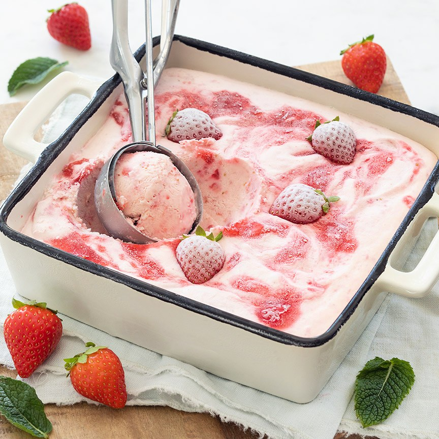

Recept gehaktbrood
Voorgerecht
Nagerecht
Aardbeien yoghurtijs
Ingrediënten
- 200 ml slagroom
- 1/2 blikje gecondenseerde melk (397 gram)
- 1 theelepel vanille aroma
- 350 gr aardbeien
- 170 gr Griekse yoghurt (5 of 10% vet)
Bereidingswijze
- Pureer de aardbeien fijn met een staafmixer of keukenmachine.
- Klop de slagroom net niet stijf met een mixer. Voeg halverwege de gecondenseerde melk en vanille aroma toe. Voeg de Griekse yoghurt toe en mix er nog kort door. Mix daarna de gepureerde aardbeien erdoor. Giet het mengsel in een schaal en zet in de vriezer.
- Schep het ijs om het half uur een paar keer door zodat er geen/minder ijskristallen ontstaan en je romig(er) ijs krijgt. Doe dit ca. 4 keer. Laat het daarna geheel bevriezen in ca. 4 uur en garneer eventueel met wat verse aardbeien en aardbeienpuree.
